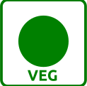
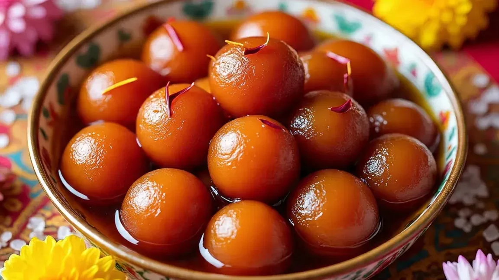

100% PURE VEGGulab Jamun
Soft, spongy milk-solid balls soaked in a warm, rose-scented sugar syrup.
Prep Time: 2.5-3 Hours | Difficulty: Medium

Ingredients You'll Need 🛒:
- 1 cup Khoya (Mawa), crumbled
- 2 tbsp Maida (All-purpose flour)
- 1/4 tsp Baking soda
- 2 cups Sugar (for syrup)
- 1 cup Water
- 4-5 Green Cardamoms, crushed
- 1 tsp Rose water
- Ghee or Oil for deep frying
Step-by-Step Cooking Instructions 👨🍳:
- Prepare Syrup: Boil sugar and water with crushed cardamoms until it becomes slightly sticky. Stir in rose water and keep warm.
- Make Dough: Mix khoya, maida, and baking soda. Knead gently into a smooth dough. If dry, add a few drops of milk.
- Shape: Form small, smooth balls. Ensure there are no cracks, or they will break while frying.
- Fry: Heat ghee on low flame. Fry the balls until they turn a deep golden brown, rotating them constantly for even color.
- Soak: Immediately drop the fried jamuns into the warm sugar syrup. Let them soak for at least 2 hours.
- Serve warm or chilled, garnished with pistachio slivers.